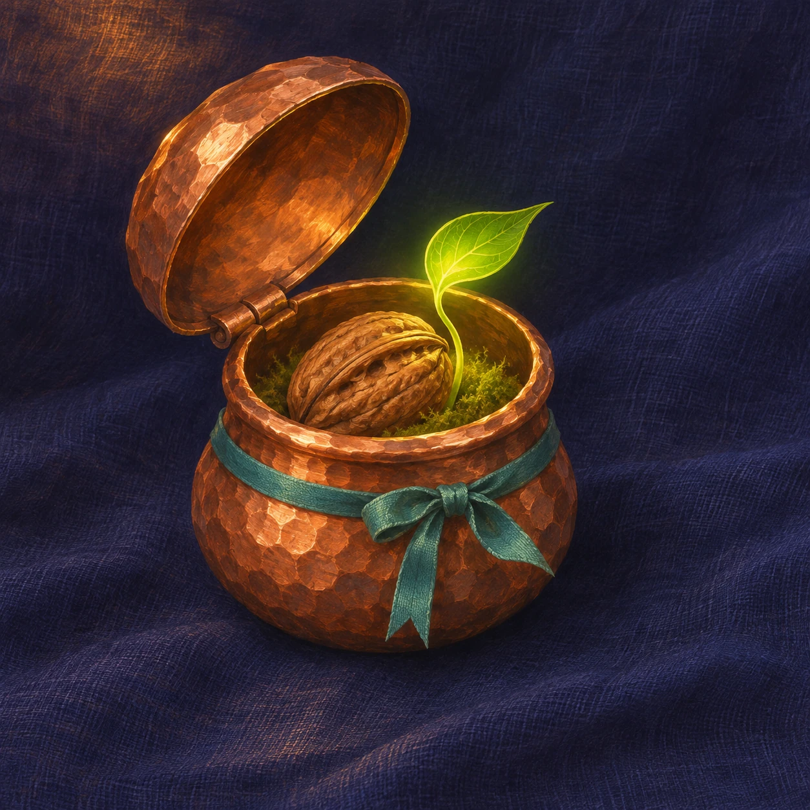

Вещь с историей
Семя-домик
Орешек в маленьком медном горшочке; под крышкой уютно светится лист.
Посадить в выбранном безопасном месте с согласия хозяев: со временем вырастет беседка. Ускорение роста — рассказ ведущего после события, без боевого бонуса.